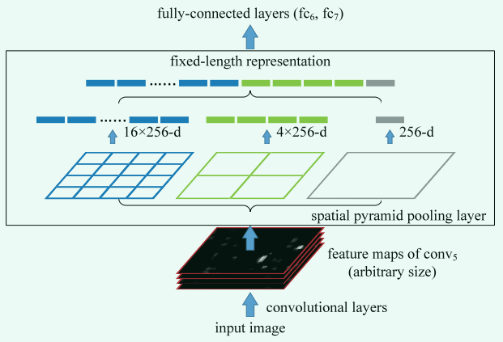
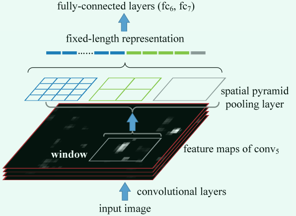
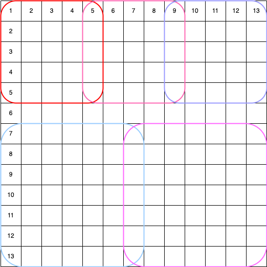

SPP-net论文笔记¶
总体概览¶
核心思路：空间金字塔池化。
以往做池化操作都是规定好池化窗口大小和步长，这样不同的特征图会得到不同的池化结果。
空间金字塔池化则是你对它说，我任意给你一张特征图，你还给我一个固定大小的特征图。
两张关键图：
1、分类的

2、目标检测的

分类和检测唯一的区别就是，分类把整个特征图喂给SPP池化层，目标检测只把RoI在特征图上的映射部分喂给SPP池化层。
最后一个问题，金字塔在哪？
把1x1的，2x2的，3x3的......这些特征图摞起来，就是金字塔了

详细解读¶
先摆个数据：ImageNet2014挑战赛，目标检测第二名，图片分类第三名。
要解决的问题¶
传统的CNN模型只能处理固定大小的图片，如果图片大小改变了，就需要调整第一个FC层的输入通道数量。举个例子，vgg16模型会对图片下采样32倍，如果我们给一个224x224大小的图片，特征提取部分会得到一个7x7的特征图，我们再乘通道数512，得到了25088，也就是FC层神经元的个数。如果我们修改了图片的大小，特征提取部分得到的特征图的大小就会改变，这时我们就必须修改FC的输入通道数。
SPP-net就解决了这个问题。SPP-net 的网络结构可以生成固定长度的表示，而与图像大小无关。金字塔池对对象变形也很稳健。与R-CNN相比，SPP-net仅对图片计算一次特征图，然后在任意区域 (子图像) 中汇集特征以生成固定长度的表示形式来训练检测器。该方法避免了重复计算卷积特征。在处理测试图像时，我们的方法比R-CNN方法快24~102倍，同时在Pascal VOC 2007上获得更好的精度。
具体做法¶
在SPP-net中，使用滑动窗口实现空间金字塔池化。如果你有一张 AxA 的特征图，你想得到一个 NxN 的特征图，池化窗口的大小是 A/N 向上取整，步长是A/N 向下取整。特征金字塔有K层，我们就执行K次这样的操作。下面给一张图示意一下：

示例代码¶
def spatial_pyramid_pooling(previous_conv, out_pool_size):
"""
spatial pyramid pooling
previous_conv: a tensor of previous convolution layer
out_pool_size: a tuple of expected output size of max pooling layer, must start from 1
returns: a tensor with shape [1 x n] is the concentration of multi-level pooling
"""
num_sample = previous_conv.shape[0] # batch size
for i in out_pool_size:
max_pool = nn.AdaptiveMaxPool2d(i)
x = max_pool(previous_conv)
if i == 1:
spp = x.view(num_sample, -1)
else:
spp = torch.cat((spp, x.view(num_sample, -1)), 1)
return spp
previous_conv, out_pool_size = torch.rand((1, 512, 13, 13)), (1, 2, 4)